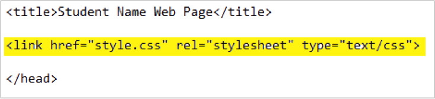
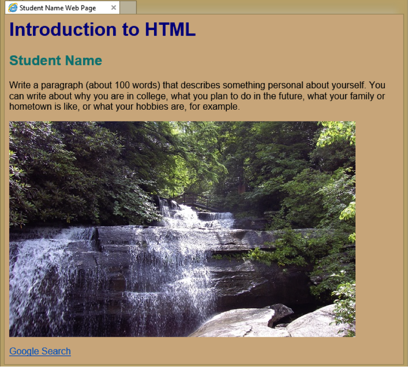
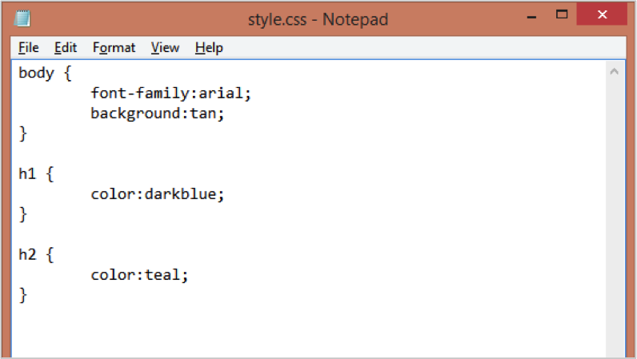
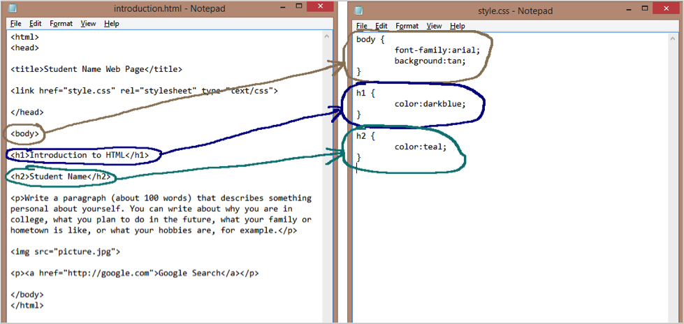

Introduction to HTML
Part 4: Applying a CSS file to the HTML file
In current Web design practice, most of the formatting for a Web page is done using CSS, a special coding page that allows the Web designer to design a template, and then apply the styles in that template to multiple pages of a Website at the same time. While some formatting can be applied directly through the HTML coding, CSS is preferred because it is a much more efficient way to make changes not only to multiple files at one time, but also to make uniform changes to all parts of each page without having to apply the formatting to each element individually.
In this part of the assignment, you are asked to link a CSS file to your HTML page, then to make changes to the format settings defined in the CSS file.
If you took a break at the end of Part 3, make sure that you have the introduction.html file open in both Notepad and your browser.
- In your file in Notebook, add the following line of text just under the <title> line, above the closing </head> line:

- Save the file in Notepad, then refresh the page in your browser window. It should now have more color, and all text should be in Arial.

The page appears different now because you have applied the formats from the CSS file to this HTML page, including the fact that the background should be formatted in tan, with text displayed in Arial font. The heading 1 text at the top of the page is dark blue, while your name appears in a lighter shade of blue.
You can modify the settings in your Web page by changing the settings in the CSS file, using the following steps:
- Make sure that the HTML file is open in both Notepad and in your browser.
- Right-click the Notepad icon on the Windows taskbar, and select Notepad. This will open a new, empty Notepad file. Use File/Open in the new window to open the style.css file provided for this assignment. You cannot open this file in Notepad by double-clicking the file.
The opened file should look like:

At this point, you may want to resize and arrange the Notepad windows so that you can see them side by side. If you compare the two files, you will see that the tags used to separate the text into sections in the HTML file match the tags listed in the CSS file.

The CSS file includes the formatting instructions that apply to the HTML file displayed in the browser. In this case, the CSS file includes the following formatting rules:
- The text inside the <body> tag (which includes all text in the visible window in the browser) will be formatted in Arial font.
- The body of the page (the main window in the browser) will be formatted with a tan background.
- The heading 1 text (<h1> … </h1>) will be formatted in dark blue.
- The heading 2 text (<h2> … </h2>) will be formatted in teal.
You are now ready to customize the format settings on your page. You can choose to change colors, change the font face, or add other formatting elements. Note the use of curly brackets { } to enclose the format settings for each section. As you make changes to the CSS file, make sure not to delete any of the existing brackets. If you choose to add new formatting statements to any of the sections, add each statement to a new line inside the correct set of brackets, with a semi-colon (;) at the end of each line, as shown in the CSS file provided.
After making each change in the CSS file, you should save the file (using File/Save or Ctrl-S), then refresh your page in the browser window to see how the change affects your page. It is recommended that you save and refresh frequently, after each change, so that you can more easily identify errors in the CSS text as soon as they occur.
You may find the following pages useful in this exercise:
- HTML color names: http://www.w3schools.com/html/html_colornames.asp
- CSS font settings: http://www.w3schools.com/css/css_font.asp
- CSS Backgrounds: http://www.w3schools.com/css/css_background.asp
Some design tips:
- Use light background colors with dark fonts or vice versa to ensure that the text is visible on your page.
- Use only standard fonts that are easy to read. Good choices include Arial, Tahoma, Times New Roman, Calibri, Cambria, and Georgia.
- Avoid frivolous fonts like Comic Sans or fonts that are hard to read like Algerian or Old English.
- Use colors that complement each other. It is better to use varying shades of one or two colors than it is to use many completely different colors.
- Avoid large blocks of bright colors like yellow or neon green. These colors can be useful to highlight specific elements on a page, but they can be hard on the eyes if used extensively.
- While you can specify font size in the CSS codes, at this point it is better not to. Your browser will determine appropriate font sizes so that the user can distinguish the headings from the body text.
- Take time to proofread all text that appears in the browser window for spelling and grammar errors. If you see errors, make corrections in the HTML file.
- You are welcome (and even encouraged!) to ask for feedback from a friend or classmate, as long as you do the HTML and CSS coding yourself.
At this point, you are almost done with the assignment. You are ready to submit your work.